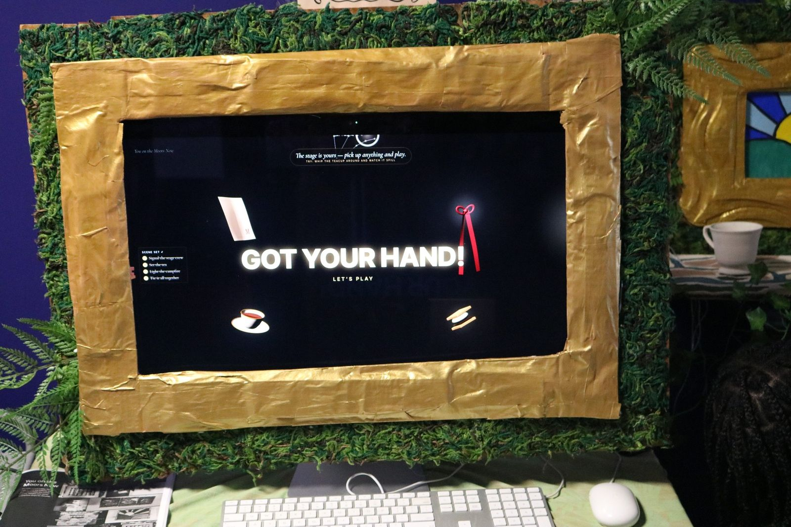
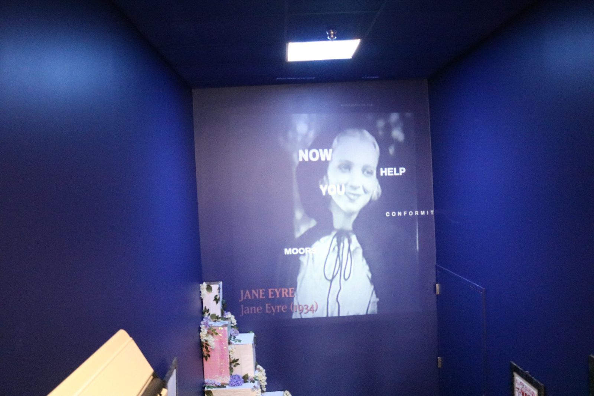

Seven stops before the curtain.
The finished lobby, November 10.
The stairwell to the Lower Depths, November 10.
Projection map tower
On the wall behind the tower.
On the back wall of the stairway.
Physical art frame
Outside the theatre doors.
In front of the projection.
The word projection on standby.
The words face
The Lower Depths Theatre is hard to find, and once you’re inside there is nowhere to wait before a show. Over the fall, our class turned the hallway and stairwell outside it into an interactive lobby for You on the Moors Now.
Four heroines receive marriage proposals. They say no and run onto the moors, and the men raise an army and go after them. We made seven stops in the order an audience meets them: a Director’s Note, hand tracking, a physical art frame, 3D props on a Makey Makey, a projection-mapped tower with a step pad, and words that drop into film, plus an informational kiosk.
The first four weeks were two short mini-projects, each ending in a user test, a showcase and a critique. The rest of the semester ran the full human-centered process: research, synthesis, ideation, prototyping, on-site testing and installation.
- Class
- Human-Centered Design (DSGN-M330), Loyola
- Professor
- Dr. Lina Lee
- When
- August 18 – November 19, 2026
- Partner
- Loyola Theatre Department, for You on the Moors Now by Jaclyn Backhaus
- Team
- Ameer, Beau, John, Kylie, Luna and U’Nique
- My parts
- Hand tracking, The Speaking Moors, the step pad (with U’Nique) and its soundboard
- AI use
- Claude helped write the code for the hand tracking and The Speaking Moors. The interactions and design are our own.
One visit, stop by stop.
Six stops in the order an audience meets them on the way down to the theatre, and the kiosk beside them. Photographed in the finished lobby.
A large screen in a frame of moss, gold and vines. Made by everyone, with Lina.
Director’s Note A large screen in a frame of moss, gold and vines. Made by everyone, with Lina.

Hand tracking Pinch to pick up props from the show on a 3D stage. Mine.
Full case studyA portrait, “How far would you go for love?” and trees. Kylie’s.
Physical art frame A portrait, “How far would you go for love?” and trees. Kylie’s.
Props from the show, 3D printed and wired to play a sound. Ameer’s.
3D props Props from the show, 3D printed and wired to play a sound. Ameer’s.
Video mapped onto a tower; the step pad plays the army. Step pad by U’Nique and me.
Tower and step pad Video mapped onto a tower; the step pad plays the army. Step pad by U’Nique and me.

The Speaking Moors What the room says drops into the film as words. Mine, with U’Nique’s film.
Full case studyThe play and its cast. Luna and Beau’s.
Informational kiosk The play and its cast. Luna and Beau’s.
A hallway is not a lobby.
The Lower Depths Theatre sits at the bottom of a stairwell. It is hard to find, and once you are inside there is nowhere to wait before a show.
Our job was to turn that hallway and stairwell into a lobby for You on the Moors Now, built from what we heard from the people who run the theatre.
“Now once you’re in the space, the hard thing for an audience is there’s no real lobby.”
The two stops I designed and built.
Each has its own short case study: how it works, the versions it went through and how it held up with visitors.
What changed once it met people and the building.
Testing with real visitors, and installing in a real stairwell, changed the plan more than once.
Made for the show run, when we wouldn’t be there.
The lobby runs through the whole production. Helen’s team keeps it going, not the class.
What a visitor is told
- “No buttons, no touching. Just raise your hand in front of the screen.” (the hand tracking sign)
- “The camera only follows your hand. Nothing is recorded or saved.”
- When the room is quiet, the word projection asks for one thing: “Say something.”
- Step on the moss, and the army is coming.
What keeps it running
- Both screen pieces run without internet, on the computers in the space.
- The hand tracking reloads every six hours, waiting for a quiet moment with nobody in front of it.
- The Speaking Moors ran on its own for about 32 hours before install, logging the film, the microphone and the words every five minutes. It was also tested on a second desktop.
- John, Kylie and Ameer filmed the full shutdown and restart, step by step, as a guide for someone who has never touched the system.
From a Makey Makey to a lobby.
Two mini-projects, then research, prototypes, seven pieces and two openings.
Hover any image for its note. Click to see it full size.
Touch to sound
The semester opened with the Makey Makey, a small board that turns anything conductive into a key. We each built a touch-to-sound piece, and several became storybooks. Mine was a found book with collaged scenes, foil hidden under each page and a sound for every scene in Scratch.
August 18.
Pages, wiring and where a hand should press.
My book plays a sound for each scene.
One of the images I made for the pages.
Finished, September 1.
Testing my book, August 27.
September 1.
Light and surface
Mini-project 2: build something in a dark room that makes a person feel what a scene in the play feels like. Team 1 (John, U’Nique and Kylie) stacked boxes into a tower in a corner and mapped video onto every face: eyes appear, fill the tower, give way to the moors, and animals run through.
Eyes, then the moors.
September 3.
September 8.
One of the animal clips.
September 17.
September 17.
Research
The real brief: the Theatre Department’s lobby. We interviewed Kaci, who runs the costume shop, then sorted what we heard onto three boards. “Now once you’re in the space, the hard thing for an audience is there’s no real lobby.”
September 15.
September 17.
September 22.
What limits us
The kiosk group’s slide.
Concept, frames and prototype
A storyboard of what a visitor would meet in the hallway and stairwell, an order of interaction, and frames for every piece: carved cardboard, painted gold, edged in moss. On October 15 each piece was shown working.
September 29.
October 1.
October 6.
October 10.
October 10–11.
October 15.
Hand tracking
A piece I proposed and added. A webcam follows the visitor’s hand, so they can pick up props from the show on a 3D stage: four cues before curtain, then free play. Built by me with Claude, tuned for the iMac it runs on.
“Touch to begin.”
Raise a hand to begin.
October 6.
Stand here, raise a hand, pinch to grab.
No buttons, no touching.
November 5.
The Speaking Moors
Conversations become words, and words descend into the film. A microphone listens to the room, and words from a list connected to the play drop into the projection. Built by me with Claude, with the film composited by U’Nique. It ran on its own for about 32 hours before install.
Words in the film
Words heard in the room
Microphone, displays, word flow and a data log.
Physical art frame
Kylie’s frame: slats that rotate to show three pictures, a portrait, the words “How far would you go for love?” and a landscape of trees.
October 8.
On a dowel
November 1.
Words
Trees
3D props and Makey Makey
Ameer’s props from the show, made in cardboard, then 3D printed and wired to a Makey Makey so touching one plays a sound.
October 18.
October 22.
October 23.
October 28.
November 4.
Step pad
Stepping on the moss plays the sound of the army. Built by U’Nique and me. The Scratch website was unreliable for sound, so I built a soundboard for the floor panels; Ameer’s props run through it too.
October 29.
November 1.
November 5.
Each press steps to the next level, then loops.
November 5.
Tower, kiosk and Director’s Note
The projection map tower moved across campus to the Lower Depths. Luna and Beau made an informational kiosk about the play, and everyone, with Lina, made the Director’s Note screen for outside the theatre doors.
October 29.
At the bottom of the stairs
Looping video
Start screen.
Meet the Cast
November 5.
Installation
The weekend before the show the walls were repainted and nothing could be hung on them, so we pivoted fast: the projection boxes were rebuilt, every piece was carried over, and power was run through the exhibit.
Installation flow
November 10.
Rebuilding the tower
Getting the projector working
Outside the Lower Depths
Opening night
The lobby was finished, the show opened, and for the first time the people it was made for walked through it.
The tower and the word projection.
Visitors at the hand tracking
Hand tracking in use
In the lobby on opening night.
Design opening
The Design Department opened the Interactive Lobby to design students and faculty, and the stairwell filled up.
During the design opening.
Hand tracking
Waiting their turn
The step pad and the tower
The Speaking Moors
Words from the room
At the kiosk
The kiosk’s process section.
So many different ways to interact with design.
“This is an excellent demonstration of how there are so many different ways to interact with design.”
“Seeing the hand movements on the computer really makes me think about how I actually move my hand. It is really interesting to look at it from that perspective.”
“The variety and different types of projects is really impressive. There’s so much in this little room.”
“It was valuable to see people of all different ages interact with it, and how they approached the different interactions.”
Shared afterwards
Who made what.
- Class
- Ameer, Beau, John, Kylie, Luna and U’Nique
- Professor
- Dr. Lina Lee
- Partner
- Loyola Theatre Department, for You on the Moors Now by Jaclyn Backhaus. Thanks to Kaci and Helen’s team.
- Director’s Note
- Everyone, with Lina
- Hand tracking
- John, built with Claude
- The Speaking Moors
- John, built with Claude. Film composited by U’Nique
- Step pad and soundboard
- John and U’Nique; soundboard by John
- Physical art frame
- Kylie
- 3D props and Makey Makey
- Ameer
- Projection map tower
- Everyone
- Informational kiosk
- Luna and Beau